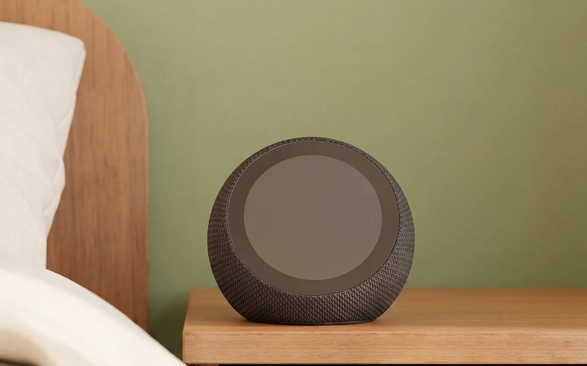
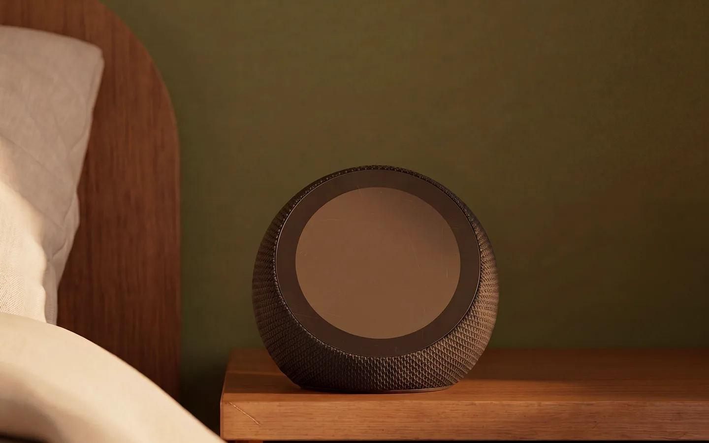
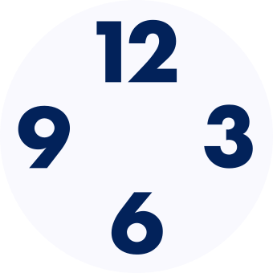
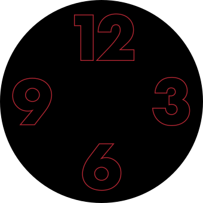

Adaptive Brightness
Relative
Absolute
0
lux
6 AM
9 AM
12 PM
3 PM
6 PM
Perceptual Slider
Recommended · vs. mathematical
Adaptive
v1 – Legacy
v2 – Reworked
Night Mode
Device Brightness
Blue
= Default brightness curve
|
Yellow
=
Learned curve
|
Outlined
= stored, suppressed
|
Faded
= replaced preference
0%
25%
50%
75%
100%
0
100
200
300
lux
Rotate your phone for a larger view